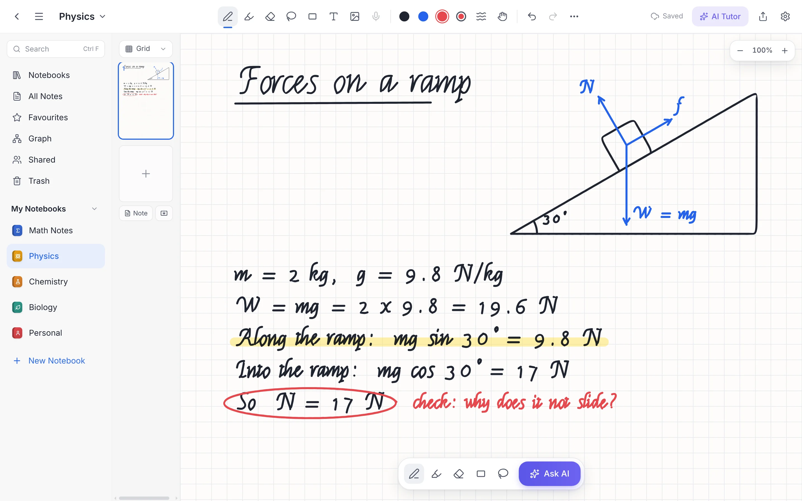

Write your working by hand
Real ink on grid, lined, dotted or blank paper, saved as you write.

- Tools
- Pen, highlighter, eraser, shapes, text and pictures
- Lasso
- Circle anything to move, resize or recolour it
- Paper
- A4, Letter, square or 16:9 pages, portrait or landscape
- Saved
- On your computer as you write, backed up daily